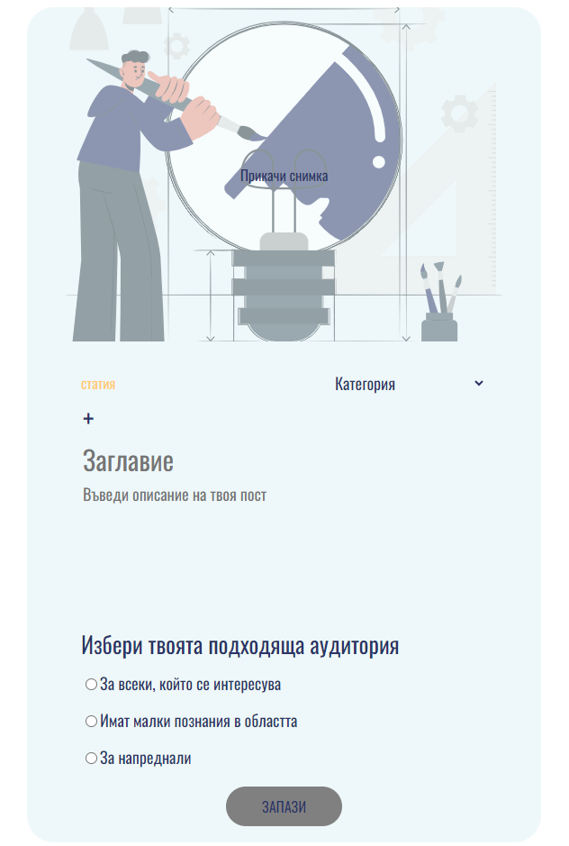

Здравей! Радвамe се, че се присъедини към нашата общност
Независимо от вида на избрания материал потребителят трябва да премине през създаването на банер. Банерите са тези, които се показват на стената с всички материали и те са своеобразни “реклами“ на материалите на потребителите. Те съдържат цялата необходима информация, описваща даден материал.
Видът на банера е различен, направихме го така, за да може създателят на материала лесно да визуализира начина, по който другите потребители ще видят банера му. По този начин той може да определи дали това, което създава, е достатъчно атрактивно и приятно за преглеждане от последователите му.
Банерът се състои от пет задължителни и едно незадължително поле:
- Заглавна снимка – представя визуално материала;
- Заглавие – задължително поле;
- Описание – има за цел да грабне вниманието на потребителите и да ги подтикне да разгледат вашия материал. Решихме максималният брой символи да бъде ограничен до 300 символа, с идеята само да загатва за съдържанието на материала;
- Категория – задължила за избиране, спряхме се на обобщаващи категории към които потребителите да отнесат материалите си по актуални теми. По този начин те лесно могат да намерят материали по теми, които ги интересуват, и да филтрират съдържанието, което преглеждат. Категориите, които избрахме са: „Здраве“, „Продуктивност“, „Спорт“, „Технологии“, „Софтуерна разработка“, „Изкуствен интелект“, „Образование“, „История“, „Изкуство“, „Наука“, „Култура“, „Природа“, „Животни“, „Икономика“, „Туризъм“ и „Политика“. Смятаме;
- Ниво – задължително поле, идеята на която е потребителите да бъдат информирани за сложността на съдържанието още от самия банер. Нивото може да бъде – „За всеки, който се интересува“, „Има малки познания в областта“ и „За напреднали“;
- Ключови думи – незадължителни, но препоръчителни за по-голямо съвпадение при търсене на материал. С опцията „+“ се създава нова ключова дума, а чрез „-“ се премахва. Броят им не е ограничен.
Бутонът Създай е неактивен, докато всички задължителни полета не са валидно попълнени.